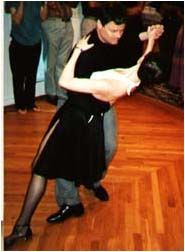

Latin dances
Latin dances like the tango, merengue and salsa are smoother, less "jumpy," than American dances. They're flirtatious and fun, but are also romantic.
With movies such as "Scent of a Woman" , "True Lies", "Evita", and now "The Tango Lesson", Tango has had a resurgence, a veritable renaissance, of this marvelously romantic of all dances.
Merengue is a dance where the man and woman move side to side, described by some as a dance that looks like moving down a crowded aisle of seats in a movie theater.
Salsa is a catch-all term for Cuban and Colombian mambo-style dances that involve moving back and forth to a four-step beat, with a lot of spinning.